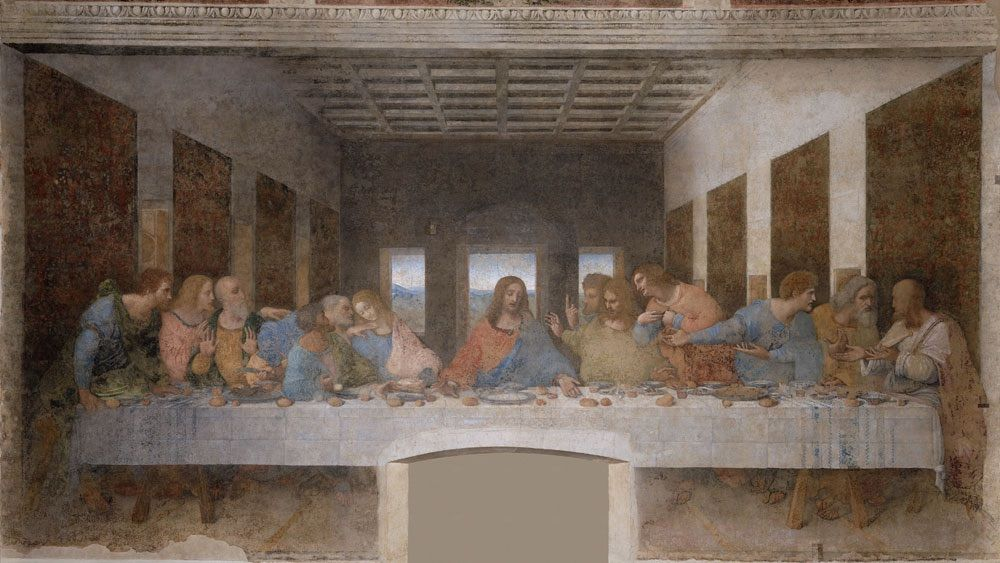

-
Mona Lisa
ศิลปิน เลโอนาร์โด ดา วินชี ชาวอิตาลี ปีที่เขียน ค.ศ. 1503-1506 อาจจะต่อเนื่องถึง 1517 ประเภท สีน้ำมันบนไม้ ขนาด 77 x 53 ซม. สถานที่ พิพิธภัณฑ์ลูฟร์, ปารีส
View more -
Starry Night
ศิลปิน วินเซนต์ แวน โก๊ะ ชาวดัตช์ ปีที่เขียน ค.ศ. 1889 ประเภท สีน้ำมันบนผ้าใบ ขนาด 73.7 × 92.1 ซม. สถานที่ พิพิธภัณฑ์ศิลปะสมัยใหม่, นิวยอร์ก
View more -
 The Last Supper
ศิลปิน เลโอนาร์โด ดา วินชี ชาวอิตาลี ปีที่เขียน ค.ศ. 1495-1498 ประเภท สีฝุ่นเทมเพอราบนผนังที่ทารองพื้นสองชั้น ขนาด 460 x 880 ซม. สถานที่ โบสถ์ Santa Maria Delle Grazie, มิลาน
View more -

The Creation Of Adam
ศิลปิน ไมเคิลแองเจโล ชาวอิตาลี ปีที่เขียน ค.ศ. 1508 – 1512 ประเภท ภาพปูนเปียก ขนาด 280 x 570 ซม.. สถานที่ โบสถ์น้อยซิสทีน, วาติกัน
View more -
The Scream
ศิลปิน เอ็ดเวิร์ด มุงค์ ชาวนอร์เวย์ ปีที่เขียน ค.ศ. 1893 ประเภท สีน้ำมัน สีฝุ่น สีชอล์ก บนกระดาษแข็ง ขนาด 91 x 73.5 ซม. สถานที่ หอศิลปะแห่งชาติ, ออสโล
View more -
The Persistence Of Memory
ศิลปิน ซัลบาโด ดาลี ชาวสเปน ปีที่เขียน ค.ศ. 1931 ประเภท สีน้ำมันบนผ้าใบ ขนาด 24 x 33 ซม. สถานที่ พิพิธภัณฑ์ศิลปะสมัยใหม่, นิวยอร์ก
View more -

Girl With A Pearl Earring
ศิลปิน โยฮัน เฟอร์เมร์ ชาวดัตช์ ปีที่เขียน ค.ศ. 1665 ประเภท สีน้ำมันบนผ้าใบ ขนาด 44.5 x 39 ซม. สถานที่ พิพิธภัณฑสถานศิลปะเมาริตส์เฮยส์, กรุงเฮก
View more -
The Night Watch
ศิลปิน แร็มบรันต์ ฟัน ไรน์ ชาวดัตช์ ปีที่เขียน ค.ศ. 1889 ประเภท สีน้ำมันบนผ้าใบ ขนาด 65 x 54 ซม. สถานที่ พิพิธภัณฑ์แห่งชาติแห่งอัมสเตอร์ดัม, อัมสเตอร์ดัม
View more -
Self-Portrait Without Beard
ศิลปิน วินเซนต์ แวน โก๊ะ ชาวดัตช์ ปีที่เขียน ค.ศ. 1889 ประเภท สีน้ำมันบนผ้าใบ ขนาด 65 x 54 ซม. สถานที่ นักสะสมส่วนตัว
View more -
Guernica
ศิลปิน ปาโบล ปิกัสโซ ชาวสเปน ปีที่เขียน ค.ศ. 1937 ประเภท สีน้ำมันบนผ้าใบ ขนาด 349 x 776 ซม. สถานที่ พิพิธภัณฑ์ Reina Sofia, มาดริด
View more -
Birth of Venus
ศิลปิน ซานโดร บอตติเชลลี ชาวอิตาลี ปีที่เขียน ค.ศ. 1486 ประเภท สีฝุ่นเทมเพอราบนผ้าใบ ขนาด 172.5 x 278.9 ซม. สถานที่ หอศิลป์อุฟฟิซิ, ฟลอเรนซ์
View more -
Water Lilies
ศิลปิน โกลด มอแน ชาวฝรั่งเศส ปีที่เขียน ค.ศ. 1906 ประเภท สีน้ำมันบนผ้าใบ ขนาด 89.9 x 94.1 ซม. สถานที่ สถาบันศิลปะแห่งชิคาโก, ชิคาโก
View more -

Dance at Le moulin de la Galette
ศิลปิน ปีแยร์-โอกุสต์ เรอนัวร์ ชาวฝรั่งเศส ปีที่เขียน ค.ศ. 1876 ประเภท สีน้ำมันบนผ้าใบ ขนาด 131 x 175 ซม. สถานที่ พิพิธภัณฑ์ออร์เซย์, ปารีส
View more